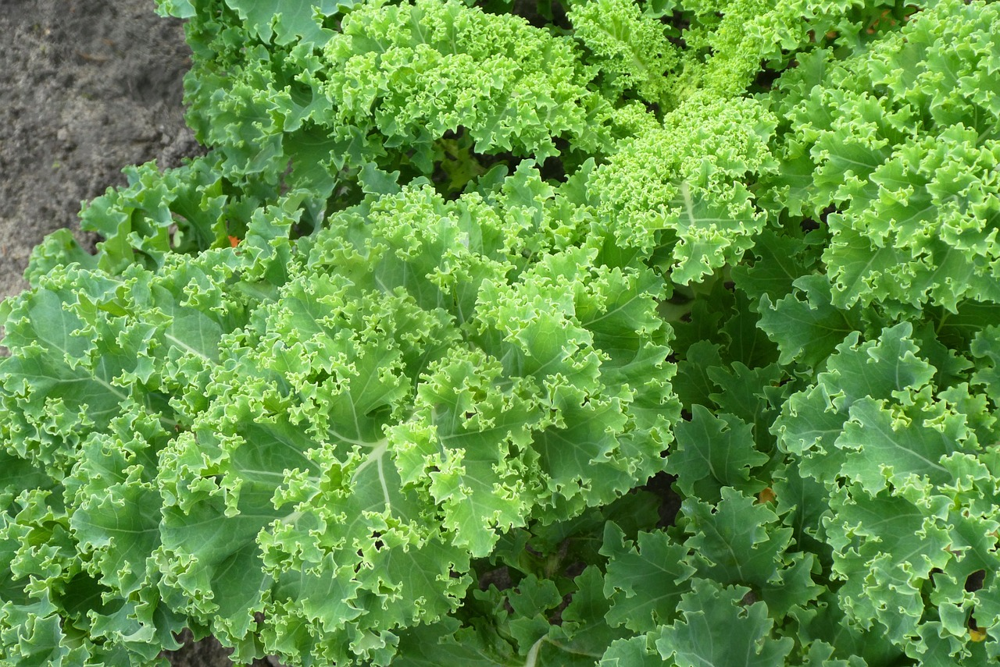
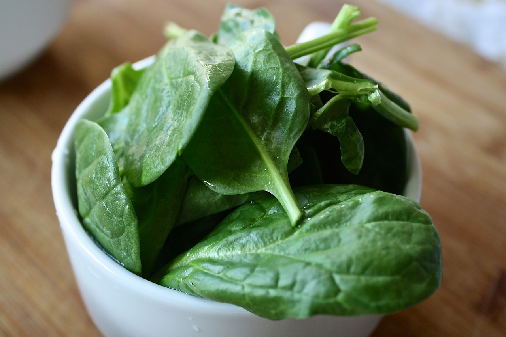
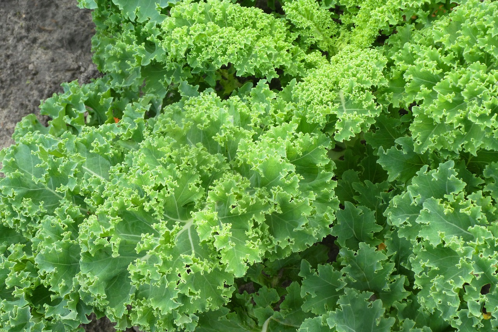
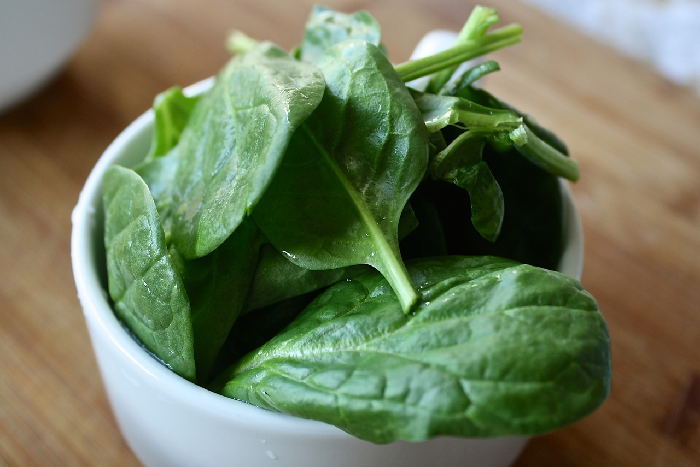

| Food | Image | Attributions |
|---|---|---|
| Kale |  | Image by Elsemargriet from Pixabay |
| Spinach |  | Image by Aline Ponce from Pixabay |
| Strawberries |  |
Image by Petra from Pixabay |
Feeding your guinea pig requires several key ingredients to keep them happy and healthy. They are herbivores so they eat a plant based diet that requires a daily dose of something high in vitamin C. Guinea pigs don't make thier own vitamin C so they need it exclusively from thier diet. They will also require hay rich in nutrients such as alfalfa or timothy or a combination of the two.
One weird little known fact that is a little gross, they eat their poop. They do this to get all the nutrients they can out of it. So the basically poop a meal twice. The first one they will eat again to get all the nutrients out and the second one is the absoulute waste that no longer has any nutrient value.
| Food | Image | Attributions |
|---|---|---|
| Kale |  | Image by Elsemargriet from Pixabay |
| Spinach |  | Image by Aline Ponce from Pixabay |
| Strawberries | |
Image by Petra from Pixabay |
I found this website useful for offering great nutritional information: GPAW